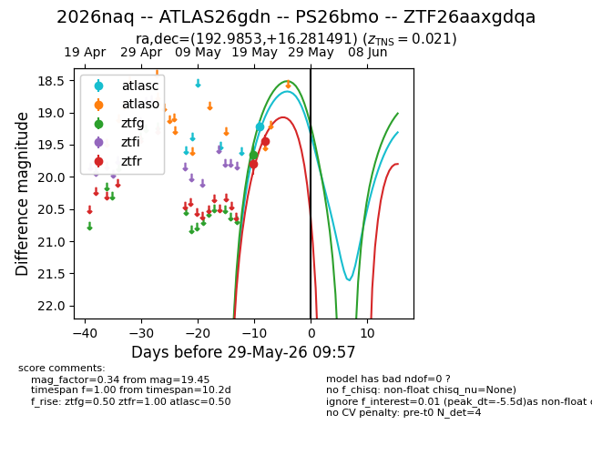
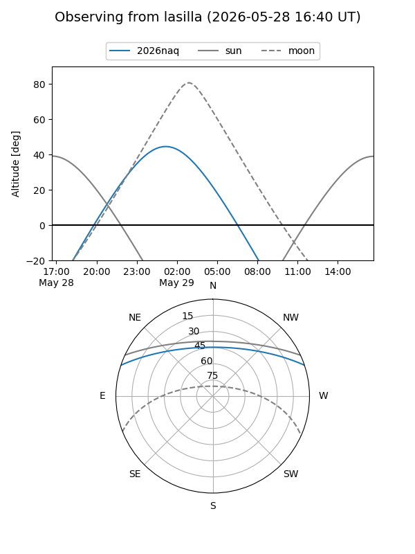
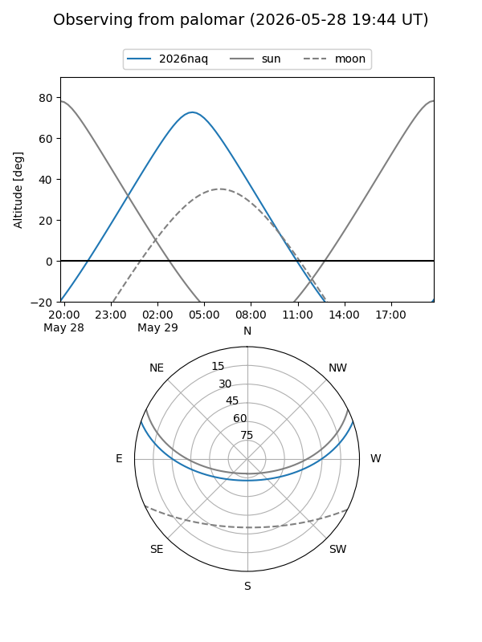
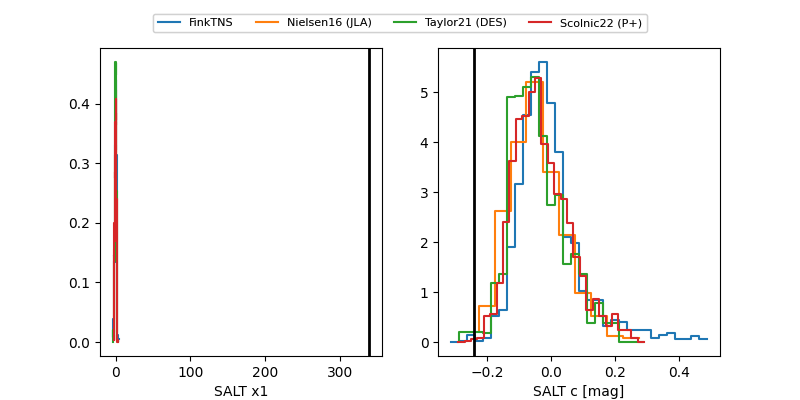

2026naq
Target 2026naq at 2026-05-29 09:59
Aliases and brokers:
lsst-FINK: link
lsst-Lasair: link
lsst-ALeRCE: link
ztf-FINK: link
ztf-Lasair: link
ztf-ALeRCE: link
TNS: link
YSE: link
alt names
ZTF26aaxgdqa (ztf,fink_ztf)
2026naq (tns,yse)
ATLAS26gdn (atlas)
PS26bmo (panstarrs)
Coordinates:
equatorial (ra, dec) = 192.9853,+16.28149
equatorial (HMS+DMS) = 12:51:56.47,+16:16:53.37
galactic (l, b) = (303.5737,+79.15261)
Flags:
TNS confirmed: SN IIb
TNS redshift: 0.021
Photometry:
last atlasc=19.22, ztfg=19.65, ztfr=19.45
1 atlasc, 1 ztfg, 2 ztfr detections
Lightcurve

Visibility


Additional plots
